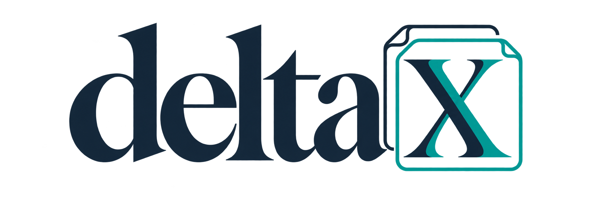

What changed
in the science?
Compare preprints and published versions. Inspect changes to results, methods, claims and authorship alongside the source text.
Open DeltaX →What changed in a paper? What needs a closer look? And how do you know whether the tools you rely on actually help?

Compare preprints and published versions. Inspect changes to results, methods, claims and authorship alongside the source text.
Open DeltaX →Explore authors and ORCID links, publication notices, reporting statements, numerical checks and reference details.
Open InspectX →Challenge tools with known-answer cases. Compare outcomes and explore the consequences for editorial workload and cost.
Open RefleX →AI-assisted prototypes with transparent rules and traceable sources. Findings are prompts for review. These demonstrations do not establish vendor performance or deliver integrity verdicts.